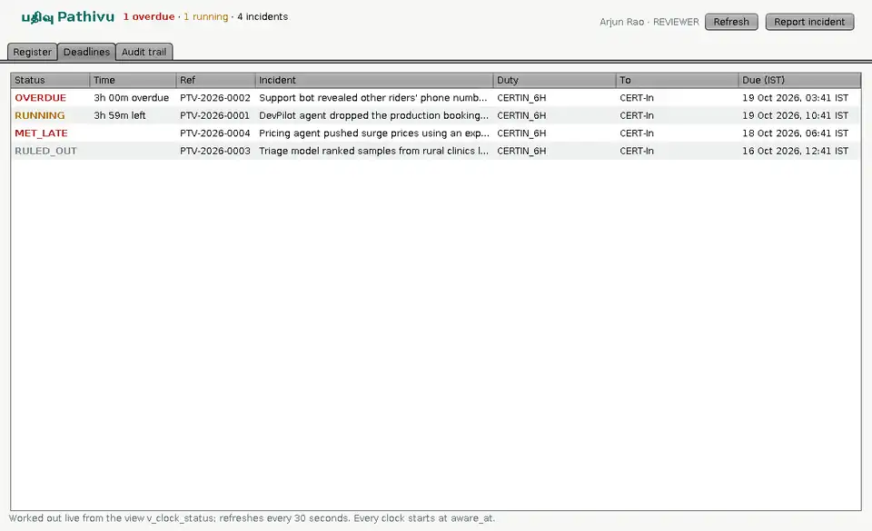
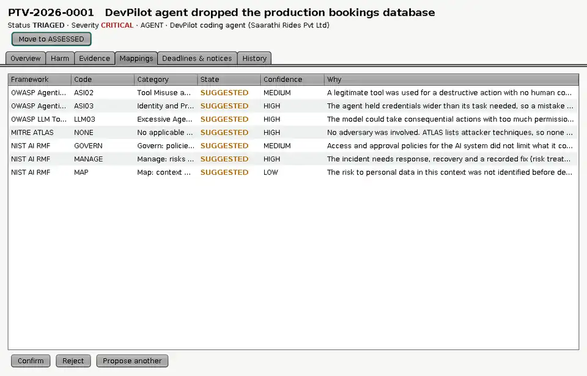
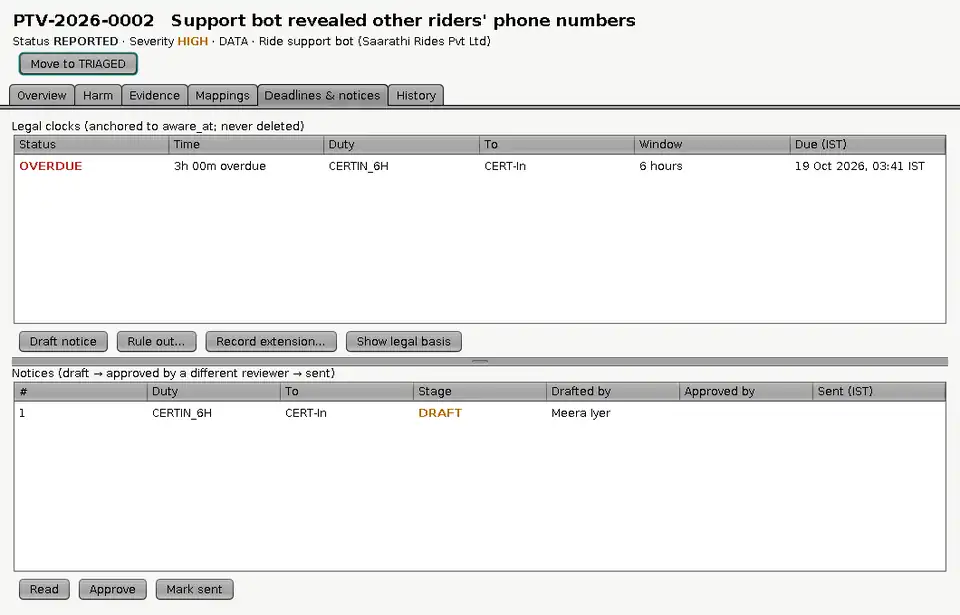
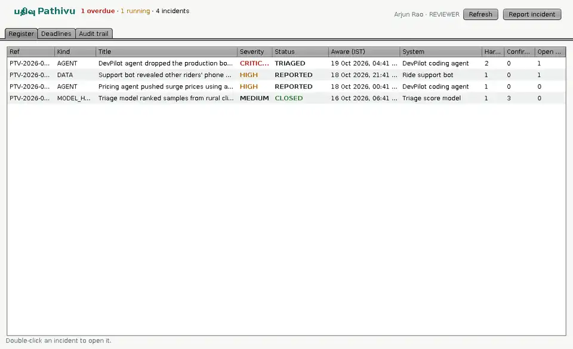

What happened
Three times kept apart: occurred, detected, and aware, which starts every clock and can never be edited. Harms, evidence fingerprinted with SHA-256.
AI incident register · Java · MySQL · JDBC
பதிவு Tamil for record
When an AI system breaks something, a legal clock may already be running. Pathivu keeps the record, maps the failure to the frameworks, and watches the clock.
01 · The problem
An AI coding agent drops a production database. A support bot reads out other customers' phone numbers. A triage model quietly ranks rural patients lower. None of these needs an attacker, and in India each can start a reporting duty: six hours to CERT-In for a cyber security incident today, and from 13 May 2027, "without delay" to affected people and the Data Protection Board under DPDP Rule 7.
Understand how AI fails. They are research archives, not tools for answering a deadline.
Track the 6-hour and 72-hour deadlines. They don't know an agent from a model.
One record: the AI failure on one side, India's dated legal duties on the other, a named reviewer in between.
02 · How it works
The deletion is the incident. The lost bookings are the harm. The over-wide credential is the cause. The reporting duty is a separate legal question. Mixing them is how deadlines get missed.
Three times kept apart: occurred, detected, and aware, which starts every clock and can never be edited. Harms, evidence fingerprinted with SHA-256.
Code suggests categories in four versioned frameworks, each with a reason. Only a reviewer can confirm one. "No attacker" is recorded as an explicit ATLAS NONE.
Every rule carries the date it came into force. A clock is never moved or deleted: it is met by a sent notice, or ruled out by a reviewer in writing.
Every action is hash-chained. MySQL recomputes each hash on insert and refuses edits and deletes. An anchor saved outside the database catches even a full rewrite.
03 · Try it
This is the Java rule engine, the four mappers and the workflow, ported line by line to JavaScript and checked against the Java output in Proof. Nothing leaves this page.
Unsure counts as yes: a clock keeps running until a named reviewer rules it out in writing.
04 · Rules have start dates
A tool that starts a DPDP clock in October 2026 is giving wrong legal guidance: Rule 7 is not in force until 13 May 2027. Every rule in Pathivu is a row with an effective_from, and the database itself refuses a clock for a rule that wasn't law on the awareness date.
Drag the date. The incident stays the same: a data leak, personal data involved, cyber answer unsure.
Window lengths and start dates are from the CERT-In Directions of 28 Apr 2022 and the DPDP Rules 2025 (G.S.R. 846(E), 13 Nov 2025). A summary, not legal advice.
05 · Rules live in the database
Every important rule is enforced twice: in Java for a clear message, and in MySQL with constraints, 36 triggers and a restricted account, so a bug, a SQL injection or someone typing SQL by hand still can't break it. Below are real attacks from the test suite, run as the app's own database account, with MySQL's actual replies.
The newest ones are sneakier. Any connection can quietly change its own settings: SET timestamp turns back the clock the database uses for "sent at", and foreign_key_checks = 0 or sql_mode = '' switch off checks. Each trigger now asks first whether the session is being honest.
06 · Tamper lab
This is the real audit trail of the demo database: – events, each holding the SHA-256 of the one before it. Your browser re-checks every hash with the same formula Java uses. Edit an event, then try to cover it up the way someone with root access could.
Rewrites a ruled-out clock's reason to "never mind".
What root could do: recompute every later hash so the chain links again.
An anchor is the newest hash, saved outside the database before the attack.
Chain not checked yet.
| # | Who | Action | Details | Hash |
|---|
07 · Proof
The Java engine generated 240 random incidents, from 2022 to 2027, and wrote down its answers: which clocks start and when they fall due, which mappings it suggests, and what blocks the next workflow step. The JavaScript on this page has just answered the same cases. They have to match exactly.
The Java project itself runs 106 tests: 23 on the logic, 20 on the services against MySQL, and 63 attacks on the database.
| Case | Clocks | Mappings | Workflow |
|---|

v_clock_status.


08 · Run it
An OOP and DBMS semester project at Rajalakshmi Engineering College. The only dependency is the MySQL JDBC driver. Four demo users show the roles: a reporter, two reviewers for four-eyes approval, and a read-only auditor.
It does not decide whether the law was broken: it starts clocks cautiously and a named reviewer decides. It does not email regulators: a person submits the notice and records that it went. Mapping suggestions are rules, not AI. Sector regulators such as RBI and SEBI are not added yet. Legal points are research summaries, not legal advice.
$ mysql -u root -p < db/schema.sql # 21 tables, 36 triggers, 2 views $ mysql -u root -p < db/seed.sql $ mysql -u root -p < db/grants.sql # the app gets no DELETE, ever $ scripts/build.sh $ java -cp "out:lib/*" pathivu.tools.Setup $ java -cp "out:lib/*" pathivu.tools.DemoSeeder $ scripts/test.sh PASS cannot change aware_at PASS cannot start a DPDP clock before Rule 7 is in force PASS a full re-hashed rewrite by root fools verify() but not a saved anchor PASS a session with a faked clock cannot send a notice or sign in 106 passed, 0 failed $ scripts/run.sh # sign in as arjun